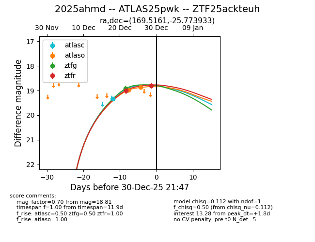
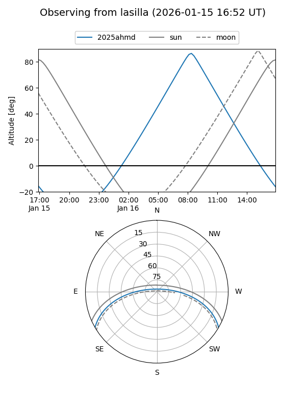
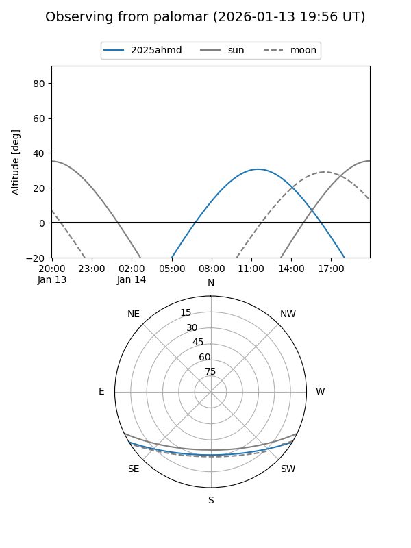
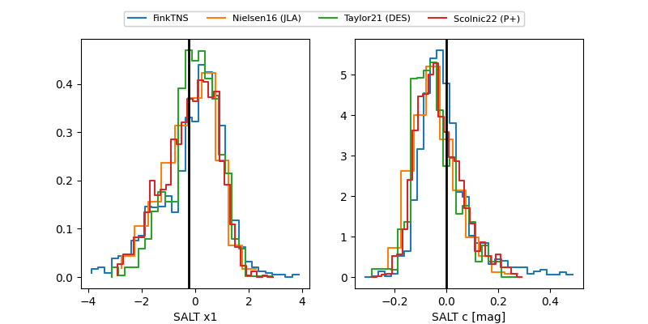

2025ahmd
Target 2025ahmd at 2025-12-30 21:48
Aliases and brokers:
FINK: fink-portal.org/ZTF25ackteuh
Lasair: lasair-ztf.lsst.ac.uk/objects/ZTF25ackteuh
ALeRCE: alerce.online/object/ZTF25ackteuh
TNS: wis-tns.org/object/2025ahmd
YSE: ziggy.ucolick.org/yse/transient_detail/2025ahmd
alt names
ZTF25ackteuh (ztf,fink_ztf)
2025ahmd (tns,yse)
ATLAS25pwk (atlas)
Coordinates:
equatorial (ra, dec) = 169.5161,-25.77393
equatorial (HMS+DMS) = 11:18:03.87,-25:46:26.16
galactic (l, b) = (277.8972,+32.51880)
Flags:
Photometry:
last atlasc=19.33, atlaso=18.87, ztfg=18.92, ztfr=18.81
1 atlasc, 2 atlaso, 1 ztfg, 2 ztfr detections
Lightcurve

Visibility


Additional plots
